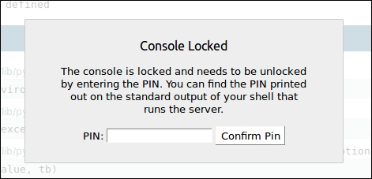

Flask Basics
Last updated on July 27, 2020
Hello World in Flask #
Let's start our venture into Flask by creating a simple application that outputs "Hello World". Create a new file named main.py and enter the following code in it.
flask_app/main.py
1 2 3 4 5 6 7 8 9 | from flask import Flask
app = Flask(__name__)
@app.route('/')
def index():
return 'Hello World'
if __name__ == "__main__":
app.run()
|
We have just created our "Hello World" app in Flask. If the code in main.py makes no sense to you that's okay. In the following sections, we are discussing everything in greater detail. To run main.py enter the following command inside the virtual envionment.
1 2 | (env) overiq@vm:~/flask_app$ python main.py
* Running on http://127.0.0.1:5000/ (Press CTRL+C to quit)
|
Running the main.py file starts the development server provided by flask at the port 5000. Now open your favorite browser and visit http://127.0.0.1:5000/ to see Hello World app in action.
To stop the server hit CTRL+C.
Instantiating Flask app #
Every Flask application must have an instance of Flask class. The instance is actually a WSGI (Web Server Gateway Interface) application which simply means that the web server passes all the requests it receives to this instance for further processing. We instantiate an object of class Flask as follows:
1 2 | from flask import Flask
app = Flask(__name__)
|
In line 1, we are importing a class named Flask from the flask package.
In line 2, we are instantiating a Flask object by passing __name__ argument to the Flask constructor. The Flask constructor has one required argument which is the name of the application package. Most of the time __name__ is the correct value. The name of the application package is used by Flask to find static assets, templates and so on.
Creating Routes #
A Route is an act of binding a URL to a view function. A view function is simply a function which responds to the request. In Flask, we use route decorator provided by the Flask instance to associate a URL to a view function. Here is how we create a route in Flask.
1 2 3 | @app.route('/')
def index():
return 'Hello World'
|
This code registers the index() view function as a handler for the root URL of the application. In other words, everytime the application receives a request where the path is / the index() function will be invoked to complete the request.
As an alternative, you can use add_url_rule() method instead of route decorator to define routes. The add_url_rule() is a simple method not a decorator. In addition to URL, it accepts endpoint and name of view function to call. The endpoint simply refers to the unique name given to the route, typically name of view function is used as an endpoint. Flask can generate URL from an endpoint, we will learn how to do this in upcoming lessons. The preceding code is equivalent to the following:
1 2 3 | def index():
return 'Hello World'
app.add_url_rule('/', 'index', index)
|
Most of the time we will be using route decorator but add_url_rule() also has its uses.
The view function must return a string. Trying to return something else will result in 500 Internal Server Error.
We can create as many routes as our application needs. For example, in the following listing, we are creating three routes.
1 2 3 4 5 6 7 8 9 10 11 | @app.route('/')
def index():
return 'Home Page'
@app.route('/career/')
def career():
return 'Career Page'
@app.route('/feedback/')
def feedback():
return 'Feedback Page'
|
When a URL in the route ends with a trailing slash (/), Flask will redirect the request without the trailing slash to the URL with the trailing slash. That means a request to /career will be redirected to /career/.
We can also map multiple URLs to the same view function. For example:
1 2 3 4 | @app.route('/contact/')
@app.route('/feedback/')
def feedback():
return 'Feedback Page'
|
In this case, whenever a request comes to /contact/ or /feedback/, the feedback() function will be invoked to complete the request.
If you try to visit a URL which isn't mapped to a view function you will get a 404 Not Found error.
Routes we have created so far were static. Most application these days consists of Dynamic URLs. A Dynamic URL is a URL which consists of one or more variable part which influences the output of the page. For example, Let's say you are building a web application which consists of user profiles and each user is given a unique id. You want to display the profile of user #1 at /user/1, user #2 at /user/2 and so on. One unwieldy way to approach the problem is to create one route for every single user.
What we could instead do is to mark dynamic parts in the URL as <variable_name>. The dynamic parts are then passed as keyword arguments to the view function. The following listing defines a route that has a dynamic part in it.
1 2 3 | @app.route('/user/<id>/')
def user_profile(id):
return "Profile page of user #{}".format(id)
|
In this example, <id> placeholder will map anything that comes after the /user/ URI. For example, if you visit /user/100/, you will get the following response.
Profile page of user #100
We not limited to numeric ids. The above route will also match /user/cowboy/, /user/foobar10/, /user/@@##/ and so on. However, it will not match URI like /user/ and /user/12/post/. We can restrict the route to match only numeric ids after /user/ URI, by specifying a converter.
By default, dynamic parts of a URL are passed to the view function as strings. We can change that by specifying a converter before the dynamic part of the URL as <converter:variable_name>. For example,
/user/<int:id>/ route would match URLs such as /user/1/, /user/2000/ and so on. It will not match URLs such as /user/cowboy/, /user/foobar10/ and /user/@@##/.
The following table lists all the converters available in Flask:
| Converter | Description |
|---|---|
string |
Accepts any string, this is the default. |
int |
Accepts integers. |
float |
Accepts floating pointing values. |
path |
Accepts path names with leading and forward slashes. |
uuid |
Accepts uuid strings. |
Starting the Server #
To start the development server we call the run() method of the Flask object.
1 2 | if __name__ == "__main__":
app.run()
|
The condition __name__ == "__main__" ensures that the run() method is called only when main.py is run as the main program. The run() method will not be called if you import main.py in another Python module.
Note: The development server comes with Flask is only used for development purpose. As a result, it will perform poorly in production.
Now you should have a pretty good idea of how main.py works.
Debug Mode #
Bugs in programming are inevitable, sooner or later you will introduce one. That's why it is extremely important to know how to debug your application and fix bugs quickly. Flask comes with a powerful interactive web-based debugger but it turned off by default. When the debugger is turned off and Flask encounters any error it will show 500 Internal Server Error. Let's see this behavior in action by introducing a bug deliberately into our main.py file. Open main.py and modify the file as follows (changes are highlighted):
flask_app/main.py
1 2 3 4 5 6 7 8 9 10 | from flask import Flask
app = Flask(__name__)
@app.route('/')
def index():
print(i)
return 'Hello World'
if __name__ == "__main__":
app.run()
|
Here we are trying to print the value of an undefined variable i, so we are bound to get an error. Start the server if not already running and visit http://127.0.0.1:5000/. You should see 500 Internal Server Error like this:
Although, the browser is not giving you any glimpse at the type of error. If you look at the standard output of the shell that runs the server you will see a traceback of the error just occurred. In this case, traceback looks like this:
1 2 3 4 5 6 7 | File "/home/overiq/flask_app/env/lib/python3.5/site-packages/flask/app.py", line 1612, in full_dispatch_request
rv = self.dispatch_request()
File "/home/overiq/flask_app/env/lib/python3.5/site-packages/flask/app.py", line 1598, in dispatch_request
return self.view_functions[rule.endpoint](**req.view_args)
File "main.py", line 13, in index
print(i)
NameError: name 'i' is not defined
|
Also when debug mode is turned off, after every change to your code, you would have to start the server manually for the changes to take effect. Turning on the debug mode will restart the server automatically after every change.
To turn on the debug mode pass debug=True to the run() method as follows:
1 2 | if __name__ == "__main__":
app.run(debug=True)
|
Another way to turn on debug mode is to set debug attribute of the Flask instance to True.
1 2 3 | from flask import Flask
app = Flask(__name__)
app.debug = True
|
Modify the main.py as follows (changes are highlighted) and run it.
flask_app/main.py
1 2 3 4 5 6 7 8 9 10 | from flask import Flask
app = Flask(__name__)
@app.route('/')
def index():
print(i)
return 'Hello World'
if __name__ == "__main__":
app.run(debug=True)
|
Visit http://127.0.0.1:5000/ again, this time you should see Flask debugger in action as follows:
If any error happens after enabling debugger, you will see a detailed traceback of the problem instead of a general 500 Internal Server Error. Generally, traceback gives a good indication of the problem occurred. At the bottom of the page, we can see the print statement which tried to print the value of undefined variable i along with the type of error, which is NameError exception, telling us that name i is not defined.
Clicking on a line of code in the traceback will expand the source code surrounding the problematic code. This is great for establishing some context while interpreting error.
You might have noticed that when you place the mouse over a line of code in the traceback Terminal icon shows up. Clicking the Terminal icon opens a console where you can execute any Python code.
This console allows us to inspect local variables at the time of the exception.
If you are opening the console for the first time, it will prompt you for a PIN.

This is a security measure to restrict the access to the console only to authorized users. To access the console you have to enter correct PIN. You can find the PIN in the standard output of the shell that runs the server.
Let's conclude this lesson by creating another Flask application which implements everything we have learned so far.
Create another file named main2.py with the following code:
flask_app/main2.py
1 2 3 4 5 6 7 8 9 10 11 12 13 14 15 16 17 | from flask import Flask
app = Flask(__name__)
@app.route('/')
def index():
return 'Hello Flask'
@app.route('/user/<int:user_id>/')
def user_profile(user_id):
return "Profile page of user #{}".format(user_id)
@app.route('/books/<genre>/')
def books(genre):
return "All Books in {} category".format(genre)
if __name__ == "__main__":
app.run(debug=True)
|
Run the file and visit http://localhost:5000/, you should be greeted with "Hello Flask" as follows:
This new version of the application adds two new routes which are dynamic. Let's test them. In your browser address bar type http://localhost:5000/user/123/ and you should get a response like this:
Notice that the route /user/<int:user_id>/ would only match URLs where dynamic part (i.e user_id) is an integer.
To test the second dynamic route visit http://localhost:5000/books/sci-fi/. This time you should get a response like this:
At this point, if you try to access a URL which is not defined in the routes you will get a 404 Not Found Error. For example, on visiting http://localhost:5000/products, the application will respond with a 404 Error like this:

How Flask Process a Request? #
So how does the Flask knows which view function to execute when it receives a request from the client?
Internally Flask maintains a mapping of URLs and view functions to execute. This mapping is created using the route decorator or add_url_rule() method of the Flask instance. We can access this mapping using the url_map attribute of the Flask instance.
1 2 3 4 5 6 7 8 9 | >>>
>>> from main2 import app
>>> app.url_map
Map([<Rule '/' (OPTIONS, GET, HEAD) -> index>,
<Rule '/static/<filename>' (OPTIONS, GET, HEAD) -> static>,
<Rule '/books/<genre>' (OPTIONS, GET, HEAD) -> books>,
<Rule '/user/<user_id>' (OPTIONS, GET, HEAD) -> user_profile>])
>>>
>>>
|
As the output shows, there are 4 rules in the mapping. Flask creates URL mapping in the following format:
url pattern, (comma separated list of HTTP methods handled by the route) -> view function to execute
The route /static/<filename> is automatically added by Flask for serving static files. We will discuss how to serve static files in lesson Serving Static Files.
Load Comments